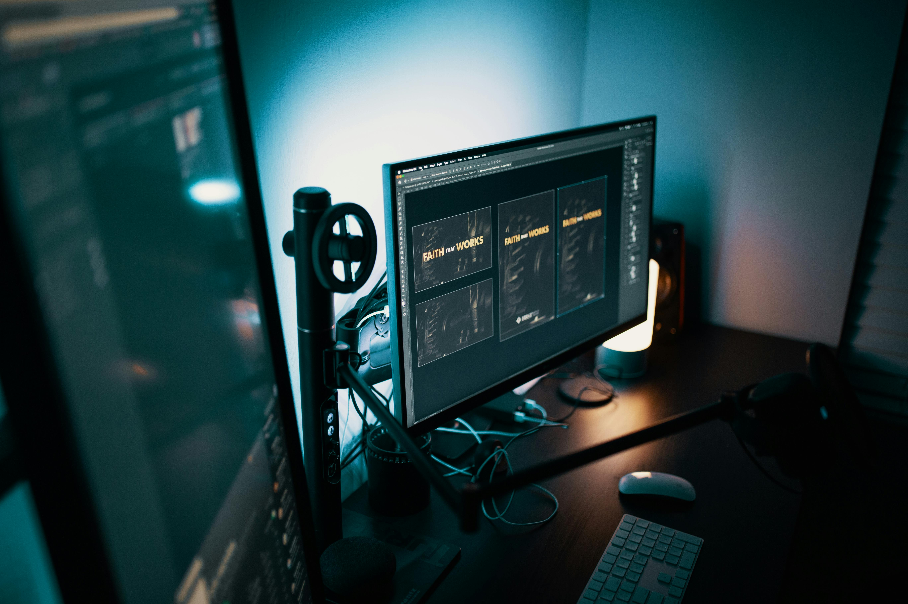
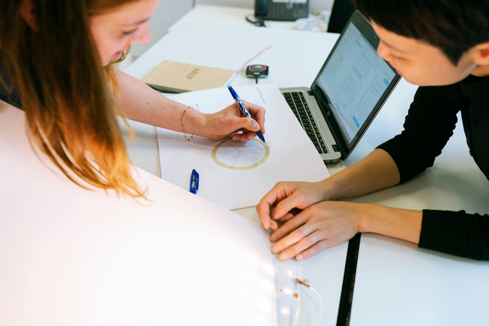
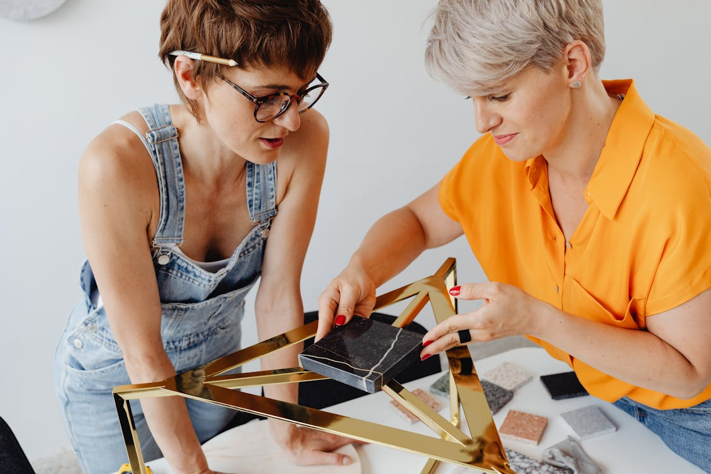

Nazywam się Marek Koniszewski i jestem studentem Uniwersytetu WSB Merito w Warszawie, gdzie studiuję Multimedia i Grafikę. Wcześniej ukończyłem Zespół Szkół Chemiczno-Elektronicznych, zdobywając tytuł Technika Informatyka. Jestem pasjonatem gier komputerowych, podróży, muzyki Interesuję się także rysunkiem i grafiką komputerową. W wolnym czasie lubię oglądać filmy.

W trakcie moich studiów skupiam się na pogłębianiu wiedzy z zakresu projektowania graficznego oraz tworzenia multimediów, co doskonale współgra z moimi zainteresowaniami i pasjami. Chcę rozwijać umiejętności w obszarze, który mnie pasjonuje od lat, a także zdobywać doświadczenie praktyczne, które będzie cenne w mojej przyszłej karierze. W Uniwersytecie WSB Merito cenię sobie elastyczność studiów niestacjonarnych, która pozwala mi łączyć naukę z innymi zainteresowaniami i życiem osobistym.
Moje doświadczenie z Zespołu Szkół Chemiczno-Elektronicznych im. Jana Pawła II w Inowrocławiu umocniło moje fundamenty w dziedzinie informatyki, co teraz integruję z nowymi umiejętnościami w grafice komputerowej i multimediach. Jestem zdeterminowany, aby każdy projekt, nad którym pracuję, był nie tylko funkcjonalny, ale i estetycznie dopracowany. Inspirację czerpię zarówno z codziennych doświadczeń, jak i z szerokiej gamy źródeł kulturowych, co pomaga mi w tworzeniu nowatorskich rozwiązań.
Moje doświadczenie zawodowe obejmuje pracę w różnych branżach, co pozwoliło mi zdobyć wszechstronne umiejętności i cenne kompetencje. W Cyfrowym Polsacie S.A., gdzie pracowałem jako Specjalista ds. Obsługi Klienta, rozwijałem swoje umiejętności komunikacyjne i sprzedażowe, prowadząc kontakt telefoniczny z klientami, utrzymując relacje z klientami oraz zajmując się sprzedażą telefoniczną pakietów. To doświadczenie nauczyło mnie skutecznego zarządzania relacjami z klientami oraz pracy w dynamicznym środowisku. Następnie, pracując w Yatta Studio JG, zdobyłem doświadczenie w bezpośredniej obsłudze klienta w sklepie z mangami. Doradzałem klientom, obsługiwałem kasę i system komputerowy, dbałem o porządek w sklepie oraz tworzyłem treści na media społecznościowe. Te różnorodne doświadczenia zawodowe pozwoliły mi rozwijać umiejętności w zakresie obsługi klienta, sprzedaży, marketingu online oraz komunikacji, co doskonale uzupełnia moje wykształcenie i pasje związane z grafiką komputerową oraz technologiami informatycznymi.

Komunikacja i współpraca zespołowa - Moje doświadczenie w obsłudze klienta oraz praktyki zawodowe nauczyły mnie skutecznej komunikacji i pracy zespołowej, co jest kluczowe w każdym środowisku zawodowym.
Zarządzanie systemami komputerowymi - Posiadam praktyczne doświadczenie w obsłudze i konserwacji systemów komputerowych, co pozwala mi efektywnie zarządzać sprzętem i oprogramowaniem.

Kreatywne myślenie i projektowanie graficzne - Studiując Multimedia i Grafikę, rozwijam swoje zdolności w zakresie tworzenia wizualnych treści i projektów graficznych, co pozwala mi łączyć technologię z kreatywnością.